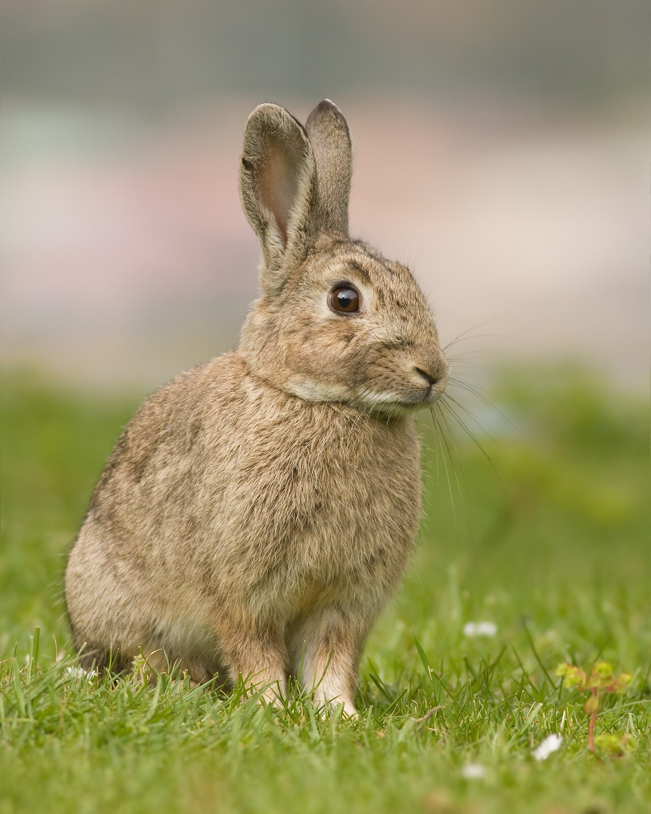

Os coelhos são uma espécie de mamíferos quadrúpedes da ordem dos lagomorfos pertencente à família dos leporídeos, em geral dos gêneros Oryctolagus e Sylvilagus. Caracterizam-se pelas orelhas e patas compridas e vasta pelagem. Esses pequenos mamíferos encontram-se facilmente em muitas regiões do planeta. São animais herbívoros utilizados pelo homem para alimentação, o pêlo para vestuário ou comumente como cobaias em estudos científicos.
O ser humano introduziu o coelho-europeu na Austrália no século XIX, em um episódio que perturbou o meio ambiente naquele país. Ao chegar na Austrália, o coelho-europeu multiplicou-se com uma taxa muito elevada por não ter predador natural, e se transformou num empecilho que prejudicou economicamente a agricultura. A totalidade dos esforços para o controle da situação não tiveram utilidade. Mas um dia chegou a disseminação da mixomatose infecciosa. A mixomatose infecciosa é uma doença endêmica entre os coelhos brasileiros. Porém, o índice provável de fatalidade no coelho-europeu foi de infelizmente 99% dos casos.
